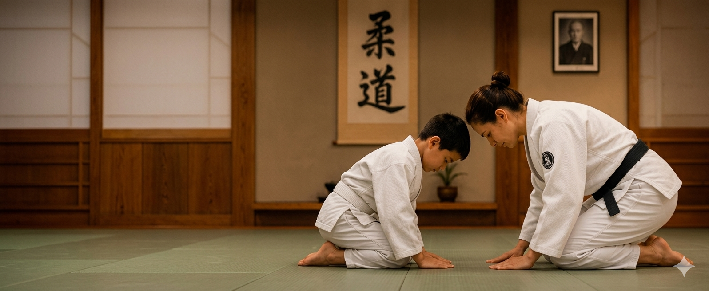

DISCIPLINA, RESPEITO E CONFIANÇA
PARA TODA VIDA!
Mais que um esporte, o judô forma cidadãos dentro e fora dos tatames.
Benefícios do Judô
O judô é uma arte marcial que oferece inúmeros benefícios para o desenvolvimento físico, mental e social de seus praticantes. Abaixo, destacamos alguns dos principais benefícios que a prática do judô pode proporcionar:
1. DESENVOLVIMENTO FÍSICO E MENTAL
A prática do judô melhora a força, resistência, flexibilidade e coordenação motora. Estimula a concentração, o foco e a tomada de decisões rápidas.
2. RESPEITO E DISCIPLINA
O judô ensina o respeito aos colegas, instrutores e adversários. Incentiva a disciplina, o cumprimento das regras e o autocontrole.

3. CONFIANÇA
Através do aprendizado progressivo das técnicas e da superação de desafios, os praticantes desenvolvem autoconfiança e autoestima.
4. SOCIALIZAÇÃO
O judô promove a interação social entre os alunos, incentivando o trabalho em equipe, a cooperação e a construção de amizades duradouras.
Sobre o Dojo Terazake
O Dojo Terazake é um espaço dedicado à prática do judô, promovendo disciplina, respeito e confiança para toda a vida. Nosso objetivo é formar cidadãos íntegros, tanto dentro quanto fora dos tatames.
Com uma equipe de instrutores qualificados e apaixonados pelo judô, oferecemos aulas para todas as idades, desde crianças até adultos. Acreditamos que o judô é mais do que um esporte; é uma filosofia de vida que ensina valores essenciais para o desenvolvimento pessoal.
Venha conhecer nosso dojo e descubra como o judô pode transformar a vida de seu filho!
Sensei Iraci Oliveira
Sensei Iraci Oliveira é a fundadora do Dojo Terazake e possui vasta experiência no ensino do judô. Com uma abordagem centrada no desenvolvimento integral dos alunos, Sensei Iraci busca transmitir não apenas técnicas de judô, mas também valores que contribuem para a formação de cidadãos conscientes e responsáveis.
Missão
Promover a prática do judô como ferramenta de desenvolvimento pessoal, incentivando a disciplina, o respeito e a confiança em nossos alunos.
Contato
Para mais informações sobre o Dojo Terazake, entre em contato conosco:
- Horário de funcionamento: Terças e Quintas, das 19h às 21h, e Sábados, das 9h às 11h
- Endereço: Rua Exemplo, 123 - Cidade, Estado Ver no mapa
- WhatsApp: Clique aqui para enviar uma mensagem
- Instagram: instagram.com/dojo.terazake
- Facebook: facebook.com/dojo.terazake
- YouTube: youtube.com/dojo.terazake